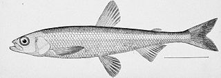

smeltr 
{kind=link}
Build algorithms for tidying spreadsheets with complicated layouts.
Installation
You can install the development version of smeltr from GitHub with:
# install.packages("devtools")
devtools::install_github("higherX4Racine/smeltr")Example
Many spreadsheets come with nested headings and wide, rather than tidy, layouts. For example, the Federal government makes monthly reports about FAFSA® Completion by High School and Public School District. These spreadsheets have many complicated rows of headers, as you can see below.
"extdata" |>
system.file("WY.xls",
package = "smeltr") |>
smeltr::extract_headers_from_sheet(.sheet = "WY School Level Data",
.nrows = 4) |>
dplyr::select(-2) |>
dplyr::mutate(
dplyr::across(tidyselect::starts_with("Row"),
\(.)stringr::str_replace_all(., "\\n", "; "))
) |>
tidyr::fill(tidyselect::starts_with("Row"), .direction = "down") |>
knitr::kable()| Column | Row2 | Row3 | Row4 |
|---|---|---|---|
| 1 | NA | NA | School Code |
| 2 | NA | NA | Name |
| 3 | NA | NA | City |
| 4 | NA | NA | State |
| 5 | 2024 / 2025 Cycle | Through December 13, 2024 | Applications; Submitted; Dec13 2024 |
| 6 | 2024 / 2025 Cycle | Through December 13, 2024 | Applications; Complete; Dec13 2024 |
| 7 | 2023 / 2024 Cycle | Through December 13, 2023 | Applications; Submitted; Dec13 2023 |
| 8 | 2023 / 2024 Cycle | Through December 13, 2023 | Applications; Complete; Dec13 2023 |
| 9 | 2023 / 2024 Cycle | Through June 2023 | Applications; Submitted; Jun 2023 |
| 10 | 2023 / 2024 Cycle | Through June 2023 | Applications; Complete; Jun 2023 |
| 11 | 2023 / 2024 Cycle | Through December 2023 | Applications; Submitted; Dec 2023 |
| 12 | 2023 / 2024 Cycle | Through December 2023 | Applications; Complete; Dec 2023 |